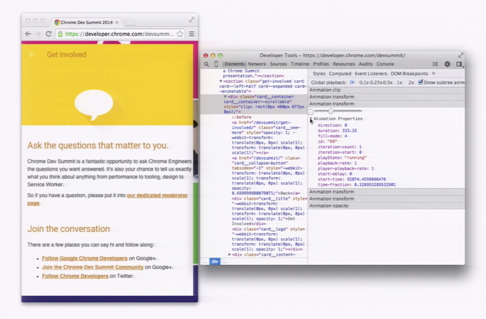

Animations
Transition
| property | values | default |
| transition-property | none | all | IDENT | all |
| transition-duration | <time> | 0s |
| transition-timing-function | <timingfunction> | ease |
| transition-delay | <time> | 0s |
How?
.elem {
transition: opacity 3s 1s;
}
.elem {
transition-property: opacity;
transition-duration: 3s;
transition-delay: 1s;
}
.elem {
transition: transform .3s, opacity 3s 1s;
}
.elem {
transition-property: transform, opacity;
transition-duration: .3s, 3s;
transition-delay: initial, 1s;
}
Timing Functions
Cubic bezier curve
Timing Functions
Timing Functions
Steps

Timing Functions
Steps
Delay
Negative delay starts the animation at position corresponding absolute value of delay
Animation
Caniuse| property | values | default |
| animation-name | none | IDENT | none |
| animation-duration | <time> | 0s |
| animation-timing-function | <timingfunction> | ease |
| animation-delay | <time> | 0ms |
| animation-iteration-count | <number> | infinite | 1 |
| animation-direction | normal | alternate | reverse | alternate-reverse | normal |
| animation-fill-mode | none | forwards | backwards | both | none |
| animation-play-state | running | paused | running |
How?
.elem {
animation: some-madness 3s infinite;
}
.elem {
animation-name: some-madness;
animation-duration: 3s;
animation-iteration-count: infinite;
}
.elem {
animation: move .3s, hide 2s 1s;
}
.elem {
animation-name: move, hide;
animation-duration: .3s, 2s;
animation-delay: initial, 1s;
}
@keyframes
@keyframes <name> rule defines scenario of animation
@keyframes some-madness {
from {
left: 0px;
top: 200px;
}
40%, 60% {
left: 400px;
background: brown;
}
to {
left: 200px;
top: 0px;
}
}
.elem {
animation: some-madness 3s infinite;
}
Timing functions
For keyframed animations, the timing function applies between keyframes rather than over the entire animation
tbody:hover .elem {
animation: move 2s ease 1; }
@keyframes move {
0% {
transform: translateX(-100%); }
25% {
transform: translateX(-75%); }
50% {
transform: translateX(-50%); }
75% {
transform: translateX(-25%); }
100% {
transform: translateX(0%); } }
Iteration count
Number of iterations. Infinite or float (for example 0.5 will play half of the animation cycle)
Fill mode
Specifies how a CSS animation should apply styles to its target before and after it is executing.
body:hover tr .elem {
-webkit-animation: move 2s linear 1s;
animation: move 2s linear 1s;
}
Fill mode example
Direction
tbody:hover tr .elem {
-webkit-animation: move 2s 2 ease-in
animation: move 2s 2 ease-in
}
Play state
Debugging tools
Performance

- Use translate() instead top/left positioning
- Use translateZ(0) or translate3d(0, 0, 0) to force hardware acceleration
will-change property
Accelerated Rendering in Chrome
On translate3d and layer creation hacks
High Performance Animations
Translate performanse
Example
Oops...
Explanation of strange behavior and some tricks
Some Gotchas That Got MeTransform and containing block
Opacity stacking context
!important vs animation
Moving an element along a circle
Gradient animation
TransitionEvent
- transitionend
AnimationEvent
- animationend
- animationiteration
- animationstart
Vendor prefix and camelCase may require. For example webkitAnimationEnd
Example
Request animation frame
Runs callback function with before the next repaint.
var request;
function step(timestamp) {
document.body.innerHTML = timestamp;
request = requestAnimationFrame(step);
}
request = requestAnimationFrame(step);
setTimeout(function(){
cancelAnimationFrame(request);
}, 1000);
Why?
- 60fps
- Don't call unwanted repaint unlike setInterval
- Running the animation loop in a tab that’s not visible, the browser won’t keep it running
Web Animations API
Moar useful links
The state of animation 2014SVG Animation and CSS Transforms